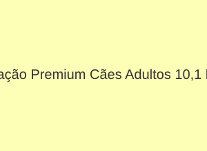
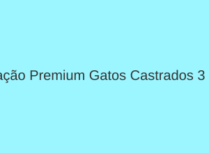

Rações
Rações secas (não perecíveis) para diferentes fases e portes.
Ração Premium Cães Adultos 10,1 kg

Descrição: Alimento completo e balanceado para cães adultos de porte médio, com frango e arroz.
Valor: R$ 189,90
Ração Premium Gatos Castrados 3 kg

Descrição: Controla o peso e cuida da saúde urinária dos gatos castrados. Sabor salmão.
Valor: R$ 89,90